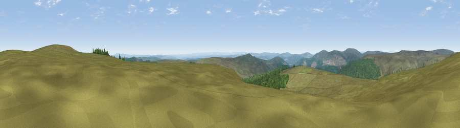

Viewpoint c11990_7394
#5273 in England · top 12% of its area beats it · — · open accessWhere it is
The exact computed spot (NY 69675 99325). Click the marker for map links.
Public access: this spot lies on mapped open-access land (CRoW Act 2000) — you may roam here on foot. Computed from Natural England's CRoW access layer and OpenStreetMap rights of way — not the legal definitive map. Always verify locally.
The view, rendered

A 360° render of this exact spot computed from the terrain model, tree cover and land cover — summer colours, afternoon light, calibrated against photographs of famous viewpoints. Real trees, hedges and buildings will differ in detail.
The panorama
Grey silhouette: terrain skyline in each direction (720 bearings, Earth curvature and refraction included). Dashed green: skyline with trees (+15 m) and buildings (+8 m) as obstacles. Blue strip: how far the ground is visible on each bearing.
Where the view opens
Wedge length = distance to the farthest visible ground on that bearing (vegetation-aware). Rings at 10, 25 and 50 km.
What fills the view
78% grassland · 22% woodland
Angular shares of the visible panorama (visual magnitude), not map area. Landscape diversity 0.23 (0–1 Shannon).
Key numbers
More beautiful places nearby
The staircase of upgrades: each row has a higher view potential than everything closer. Driving times are estimates from straight-line distance, calibrated against real road routing — check an actual route before setting out.
| Place | Direction | Drive | Score |
|---|---|---|---|
| Wool Meath | NE · 1 km | ~2 min | 70.9 |
| Viewpoint near Byrness | E · 2 km | ~6 min | 72.2 |
| Monkside | SSW · 4 km | ~10 min | 78.4 |
| Viewpoint c12122_7374 | N · 7 km | ~15 min | 78.9 |
| Viewpoint c11995_7247 | W · 7 km | ~15 min | 82.1 |
| Viewpoint c12273_7856 | ENE · 27 km | ~43 min | 83.7 |
| Viewpoint c12396_7887 | NE · 32 km | ~50 min | 85.7 |
| Viewpoint near Kirknewton | NE · 38 km | ~57 min | 86.1 |
55.28711, -2.47901 · source: screening · position refined by local search. Computed location — check access rights before visiting.